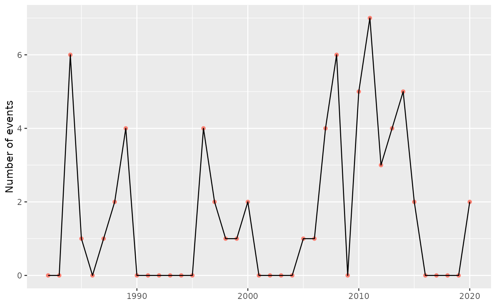

Calculate yearly means for event metrics.
block_average(data, x = t, y = temp, report = "full")
| data | Accepts the data returned by the |
|---|---|
| x | This column is expected to contain a vector of dates as per the
specification of |
| y | This is a column containing the measurement variable. If the column
name differs from the default (i.e. |
| report | Specify either |
The function will return a data frame of the averaged (or aggregate) metrics. It includes the following:
The year over which the metrics were averaged.
Seawater temperature for the specified year [deg. C].
The minimum temperature for the specified year [deg. C].
The maximum temperature for the specified year [deg. C].
The number of events per year.
The average duration of events per year [days].
The average event "mean intensity" in each year [deg. C].
The average event "maximum (peak) intensity" in each year [deg. C].
The maximum event "maximum (peak) intensity" in each year [deg. C].
The average event "intensity variability" in each year [deg. C].
The average event "cumulative intensity" in each year [deg. C x days].
Average event onset rate in each year [deg. C / days].
Average event decline rate in each year [deg. C / days].
Total number of events days in each year [days].
Total cumulative intensity over all events in each year [deg. C x days].
This function needs to be provided with the full output from the detect
function. Note that the yearly averages are calculted only for complete years
(i.e. years that start/end part-way through the year at the beginning or end
of the original time series are removed from the calculations).
This function differs from the python implementation of the function of the
same name (i.e., blockAverage, see https://github.com/ecjoliver/marineHeatWaves)
in that we only provide the ability to calculate the average (or aggregate)
event metrics in 'blocks' of one year, while the python version allows
arbitrary (integer) block sizes.
Hobday, A.J. et al. (2016), A hierarchical approach to defining marine heatwaves, Progress in Oceanography, 141, pp. 227-238, doi: 10.1016/j.pocean.2015.12.014
ts <- ts2clm(sst_WA, climatologyPeriod = c("1983-01-01", "2012-12-31")) res <- detect_event(ts) out <- block_average(res) summary(glm(count ~ year, out, family = "poisson"))#> #> Call: #> glm(formula = count ~ year, family = "poisson", data = out) #> #> Deviance Residuals: #> Min 1Q Median 3Q Max #> -2.3992 -1.5279 -0.5768 0.6122 3.7773 #> #> Coefficients: #> Estimate Std. Error z value Pr(>|z|) #> (Intercept) -105.58986 29.22236 -3.613 0.000302 *** #> year 0.05308 0.01459 3.638 0.000275 *** #> --- #> Signif. codes: 0 ‘***’ 0.001 ‘**’ 0.01 ‘*’ 0.05 ‘.’ 0.1 ‘ ’ 1 #> #> (Dispersion parameter for poisson family taken to be 1) #> #> Null deviance: 89.964 on 32 degrees of freedom #> Residual deviance: 75.723 on 31 degrees of freedom #> AIC: 133.7 #> #> Number of Fisher Scoring iterations: 6 #>library(ggplot2) ggplot(data = out, aes(x = year, y = count)) + geom_point(colour = "salmon") + geom_line() + labs(x = NULL, y = "Number of events")